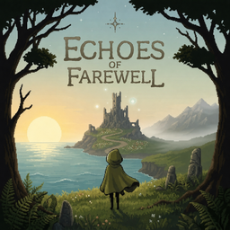
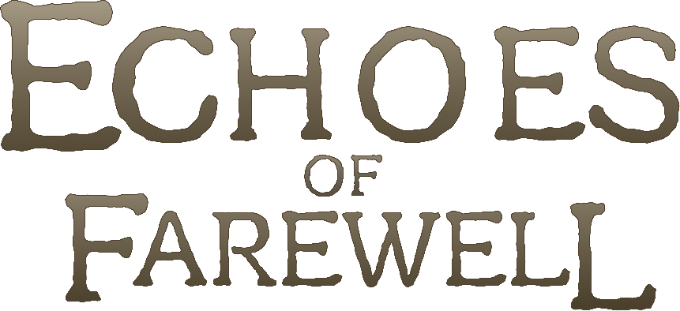

01
성취감 있는 고난이도Hard, and worth it
쉽지 않은 전투를 하나씩 돌파해 나갈 때 오는 성취감. 적의 패턴을 읽고, 받아칠 공격과 피할 공격을 가려내 다음 구역으로 나아가세요.Read each enemy's patterns, tell which attacks to parry and which to dodge, and push into the next area. Every win is earned.

EOF
카드 수집과 메트로베니아Card collecting meets Metroidvania
01 — 게임 소개ABOUT

Echoes of Farewell은 카드 수집과 메트로베니아를 결합한 2D 횡스크롤 액션 어드벤처입니다. 맵을 탐험하고, 적의 공격을 받아쳐 영혼불을 모으며, 카드로 나만의 전투 방식을 만들어 보세요. Echoes of Farewell is a 2D side-scrolling action adventure that blends card collecting with Metroidvania exploration. Explore the map, parry attacks to gather Soulfire, and shape your own fighting style with cards.
02 — 게임 특징FEATURES
쉽지 않은 전투를 하나씩 돌파해 나갈 때 오는 성취감. 적의 패턴을 읽고, 받아칠 공격과 피할 공격을 가려내 다음 구역으로 나아가세요.Read each enemy's patterns, tell which attacks to parry and which to dodge, and push into the next area. Every win is earned.
석상에 처음 닿으면 뒷면으로 놓인 카드 3장 중 1장을 고릅니다. 회피·방어·영혼불 공격을 바꾸는 카드를 모으고, 같은 카드를 또 고르면 레벨이 오릅니다. 어떤 카드를 고르느냐에 따라 같은 적도 전혀 다른 싸움이 됩니다.Touch a statue for the first time and pick one of three face-down cards. Cards reshape your dodges, your guard and your Soulfire attacks, and picking a card again levels it up. What you choose can turn the same enemy into an entirely different fight.
적절한 타이밍에 F키로 패링하면 공격을 받아치고 영혼불을 얻습니다. 패링 직후 좌클릭하면 패링 반격이 나가고, 영혼불이 3개 모이면 좌클릭을 꾹 눌러 강공격을 쓸 수 있습니다.Press F with good timing to parry and gain Soulfire. Click right after a parry to strike back, and once you hold three Soulfires, hold left-click to unleash a heavy attack.
03 — 게임 시스템SYSTEMS
적의 공격이 닿기 직전에 F키를 누르면 패링하며 영혼불 1개를 얻습니다. 일부 연속 공격은 짧은 시간 안에 여러 번 연달아 패링해야 하고, 놓친 만큼 피해를 입습니다.Press F just before an attack lands to parry and earn one Soulfire. Some flurries must be parried several times in a row, and every hit you miss gets through.
패링 직후 좌클릭하면 패링 반격이 나갑니다. 패링을 거듭해 적의 인내력을 가득 채우면 적이 잠시 무장 해제되고, 이때 패링하거나 공격을 맞히면 강화반격이 저절로 이어집니다.Click right after a parry to strike back. Keep parrying to fill an enemy's endurance and it is briefly disarmed; parry or land a hit then, and an empowered counter follows on its own.
F키를 꾹 누르면 방어합니다. 막을수록 인내력이 차오르고, 가득 차면 가드가 깨져 2초 동안 무방비 상태가 됩니다. 패링할 수 없는 공격은 막는 순간 바로 가드가 깨집니다.Hold F to guard. Blocking builds up your endurance; when it maxes out your guard breaks and you are left open for 2 seconds. Unparryable attacks break your guard instantly.
왼쪽 Shift로 대쉬하는 동안에는 공격을 받지 않습니다. 공격이 닿는 순간에 맞춰 대쉬하면 시간이 느려지며 영혼불 1개를 얻습니다. 대쉬에는 스태미나가 들어서 모자라면 쓸 수 없습니다.You can't be hit while dashing with Left Shift. Dash right as an attack lands to slow time and earn one Soulfire. Dashing costs stamina, so you can't dash when you run low.
영혼불이 있으면 평타마다 1개씩 써서 훨씬 강한 영혼 공격이 나갑니다. 3개 이상일 때 좌클릭을 꾹 누르면 3개를 한꺼번에 써서 주변을 휩쓰는 강공격을 합니다. 한동안 쓰지 않은 영혼불은 서서히 사라집니다.While you have Soulfire, each basic attack spends one on a much stronger soul strike. With three or more, hold left-click to spend three at once on a sweeping heavy attack. Soulfire left unused slowly fades away.
석상에 닿으면 그곳이 부활 지점이 되고, 처음 닿은 석상에서는 카드를 1장 고릅니다. 쓰러지면 라이프 1개와 모아 둔 영혼불을 모두 잃고 마지막 석상에서 다시 시작합니다.Touching a statue makes it your respawn point, and the first touch lets you pick a card. Fall in battle and you lose a life and all your Soulfire, then rise again at the last statue.
04 — 갤러리GALLERY
05 — 조작법 · 사양CONTROLS & SPECS
06 — 다운로드DOWNLOAD
사용하시는 운영체제에 맞는 데모 빌드를 받아 주세요. 구글 드라이브로 배포합니다.Pick the demo build for your OS. Files are hosted on Google Drive.
Windows 다운로드Download for Windows macOS 다운로드Download for macOS
다운로드 링크는 곧 열립니다.Download links are opening soon.
07 — 행사 · 수상EVENTS & AWARDS
08 — 개발팀TEAM
09 — FAQ
현재 데모는 무료로 받을 수 있습니다. 정식 가격은 아직 정해지지 않았습니다.The demo is free to download. The final price has not been decided yet.
Windows와 macOS를 지원합니다.Windows and macOS.
현재 게임은 한국어만 지원합니다. 이 웹사이트는 한국어와 영어로 볼 수 있습니다.The game is currently Korean only. This website is available in Korean and English.
패링 외의 방법으로도 클리어할 수 있지만, 패링으로 플레이할 때보다 시간이 더 걸리도록 설계되어 있습니다.You can clear the game without parrying, but doing so takes noticeably longer than playing around the parry.
석상에 처음 닿으면 뒷면 카드 3장 중 1장을 골라 얻습니다. 이미 가진 카드를 고르면 그 카드의 레벨이 오릅니다.Touch a statue for the first time and choose one of three face-down cards. Picking a card you already own levels it up.
아직 정해지지 않았습니다. 소식은 이 페이지에 먼저 공개됩니다.Not decided yet. News will appear on this page first.
10 — 문의 · 피드백CONTACT & FEEDBACK
후기 남기기Leave a review 이메일 문의Email us
leejeongwoo1103@gmail.com